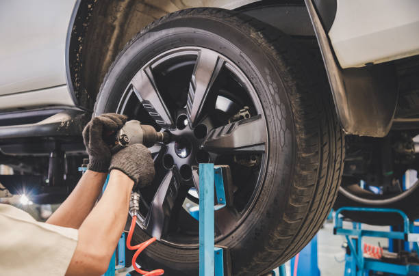

How to Find Reliable and Efficient Auto Body Repair Services in Garland TX
Posted by on 2024-05-23
When it comes to finding reliable and efficient auto body repair services in Garland, TX, there are a few key factors to keep in mind. With so many options available, it can be overwhelming to know where to start. However, by following some simple guidelines, you can ensure that you find the best possible service for your needs.
First and foremost, it is important to do your research. Look online for reviews and testimonials from previous customers, as this will give you a good idea of the reputation of the auto body repair shop. You can also ask friends and family for recommendations, as word-of-mouth referrals are often the most trustworthy.
Once you have narrowed down your options, schedule a consultation with each potential repair shop. During this meeting, make sure to ask about their experience and qualifications. A reputable auto body repair shop should be able to provide proof of certification and training for their technicians.
In addition to qualifications, it is important to inquire about the types of services offered by the shop. Make sure that they have experience working on your specific make and model of vehicle, as well as any specialized services that you may require.
Finally, don't forget to ask about pricing and warranties. A reliable auto body repair shop should provide you with a detailed estimate before beginning any work, as well as a guarantee on their services.
By taking the time to research your options and ask the right questions, you can find a reliable and efficient auto body repair service in Garland,TX that will get your vehicle back on the road in no time.